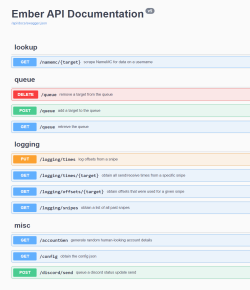
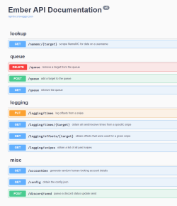

Current Projects

Gardening is slow. One must input lots of effort to achieve only a meager harvest. For a typical house plant, one only gets a few peppers, or maybe 3-4 tomatoes, if any. I've decided to grow basil, a naturally fast-growing plant, hydroponically, with powerful grow lights, in my closet, to achieve as much pesto as possible within as short a time period as possible. Rather than a few leaves every other week, with the space of a small closet, I've been able to produce multiple cups of pesto weekly.
Consuming a daily two cups of coffee in the morning rush, racing to make the early-train, and the constant struggle to choose between breakfast or an extra 5 minutes of leeway, gave me an epiphany: caffeinated granola bars. High calorie, compact, and highly caffeinated, these granola bars satisfy caffeine and caloric needs while also being very easy to consume quickly. Made by mixing together typical granola ingredients and blending pure (pre portioned) caffeine powder into hot honey, followed by roasting and cutting into bar shape.
A discord bot which utilises William Whitaker's Words, a popular latin vocab translator capable of determining verb conjugations, noun declensions, and more, to translate Latin vocab. To maintain a high level of simplicity and ease of use, this bot ONLY works via direct messages, and has no prefix or commands. Rather, to use the bot all one must do is direct message it a singular latin or english word. Feel free to invite this bot to a server, and then message it a vocab words directly to test it out.

Bitwarden, a popular open source and free password manager, does a great job of securely storing passwords and other personal data in their cloud, well encrypted and easily accessible. However, their option to export your vault (to maintain a local/physical backup) is to export it as an organized json file, leaving your data in a very human-unfriendly format. While the json format is great for interpreting the data as a machine, I wanted to make a program to convert it to a more human readable html file, allowing one to print the backup onto physical paper. In addition, I have integrated automatic favicon/icon fetching, qr code generation (qr codes which contain data about the items in one's Bitwarden vault), databreach checks (using the haveibeenpwned.com api) and more.
While still a work in progress, recently I have been working on a tool to automatically back up one's Google Photos library to a hard drive, using the Google Photos API. Though other tools of the sort exist already, my goal is to make a fully async (with asyncio) tool, to concurrently download many files at once on a single thread — ideal for Raspberry Pis and low end computers.

A Github username transfer bot, to move usernames between Github accounts without the risk of them being claimed whilst publicly available. The bot is able to auth the Github account, verify with an email OTP, and then spam requests to change to the desired username while the user frees up the username.
In a way a proof of concept, this is a program to scrape the cloudflare protected website, NameMC, a Minecraft-social-media site. NameMC uses advanced cloudflare anti-scraping, making it very hard to pull content from their website. To get the droptime, search count, and other information about given Minecraft usernames, however, the use of NameMC is vital, as NameMc has cached almost every username, and is able to check to see when people change their usernames. Additionally, when a 'sniping' (autoclaiming) service 'snipes' a username, generally they send out an informative embed with information about the 'snipe,' including information pulled from NameMC. While not the first NameMC api, I've created the only open source api for scraping NameMc data. The api uses a bypass which I have found, allowing discord to pull the information instead of a direct request. Discord, a popular chatting platform, is able to auto-generate embed previews, with information from NameMC, regardless of NameMC's harsh cloudflare protection.

 

An ongoing project of mine has been developing systems to autoclaim Minecraft usernames at the exact millisecond they drop. When you change your username for Minecraft, the name becomes available to the public after 37 days, a time which is publicly known. I have coded a queue system to automatically prepare and auth Minecraft accounts on various servers, briefly before the droptime of the name, and then automatically send requests to claim the name at the exact time of drop. While many names are 'sniped' by a plethora of other sniping organizations, I have obtained many decent usernames nonetheless, and have turned the project into a business, selling the accounts with valued usernames on them. Worth noting that while closed source, I have coded a fully functional async api with aiohttp, documented to openAPI standards, for managing queued names.
With the acquisition of techy.cc (which I initially intended to use for a personal email), I learned enough html/css to code a basic website to display my contacts and current/past 'techy' projects.